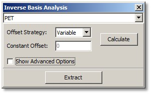
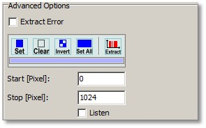
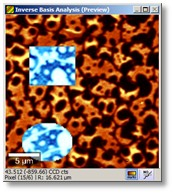
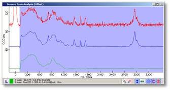
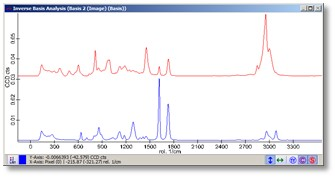

|
描述
此对话框使用强度分布图像与图像光谱测量来计算解混基光谱和偏移光谱。
另请参阅
输入与结果
输入：
结果：
用户界面

PET（组合框）：
在此您可以选择输入图像之一。它将显示在预览图像查看器中，以便能够定义图像掩模。
偏移策略（组合框）：
在此您可以选择偏移策略之一（根据光谱的偏移选择策略）：
常数偏移（浮点编辑框）：
如果光谱有常数偏移，请输入常数偏移值。偏移策略必须为"常数"。
计算（按钮）
这将开始逆基分析并在预览窗口中显示结果。在计算逆基分析之前，您必须通过在图像预览窗口中绘制掩模来选择哪些光谱应参与算法。
提取（按钮）：
提取当前结果。
显示高级选项（复选框）：
显示一些高级选项：

提取误差（复选框）：
如果勾选，按下"提取"按钮时将创建额外的误差图像。
掩模控件（工具按钮和编辑框）：
您需要更改掩模以定义哪些光谱像素应用于逆基分析。这些编辑是可选的，您可以直接在预览图谱查看器中更改掩模。
预览窗口

预览图像窗体显示当前选定的输入图像。您必须在此处绘制掩模以定义哪些图像像素应用于逆基分析。

第一个图谱预览窗口显示：

第二个图谱预览窗口显示预览基图谱，每个放置的图像一个。